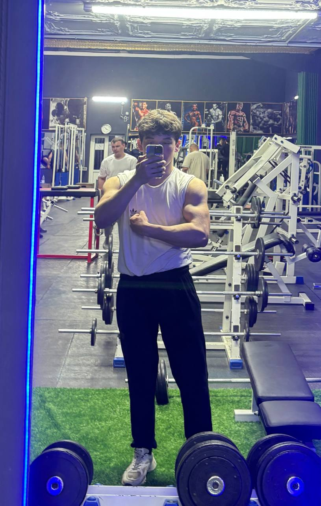

10 советов по улучшению тренировок

Поставьте цели:
Определите конкретные цели для каждой тренировки или периода тренировок. Это поможет вам лучше фокусироваться и оценивать прогресс.
Разнообразие упражнений:
Используйте разнообразие упражнений для разных групп мышц. Это помогает избежать монотонности и стимулирует все части тела.
Правильная техника:
Освойте правильную технику выполнения упражнений. Это уменьшит риск травм и максимизирует эффективность тренировок.
Отдых и восстановление:
Уделяйте должное внимание отдыху между тренировками и восстановлению после них. Это не менее важно, чем сама тренировка.
Регулярность тренировок:
Регулярные тренировки важны для достижения результатов. Создайте расписание тренировок и придерживайтесь его.
Питание и гидратация:
Правильное питание и достаточное потребление воды играют ключевую роль в успехе тренировок и восстановлении мышц.
Мотивация и поддержка:
Найдите источники мотивации, будь то тренер, друзья или сообщество. Поддержка помогает преодолевать трудности и достигать новых высот.
Читать далее
Как эффективно планировать учебу

Установите ясные цели:
Определите, что именно вы хотите достичь в результате своего обучения. Цели должны быть конкретными, измеримыми, достижимыми, реалистичными и ограниченными по времени (SMART).
Составьте расписание:
Разработайте расписание, которое включает время для занятий, самостоятельной работы, повторения материала и отдыха. Планируйте свое время заранее, чтобы избежать спешки и стресса.
Приоритизируйте задачи:
Определите наиболее важные задачи и материалы, которые требуют вашего внимания. Это поможет вам эффективно использовать свое время и достигать значимых результатов.
Разбейте задачи на подзадачи:
Разделите большие задания на более мелкие и управляемые части. Это поможет вам лучше сосредоточиться на каждом этапе выполнения задачи и повысить продуктивность.
Оценивайте и корректируйте план:
Регулярно оценивайте свой прогресс и эффективность планирования. Вносите коррективы в план, если это необходимо, чтобы улучшить свои результаты и достичь поставленных целей.
Читать далее